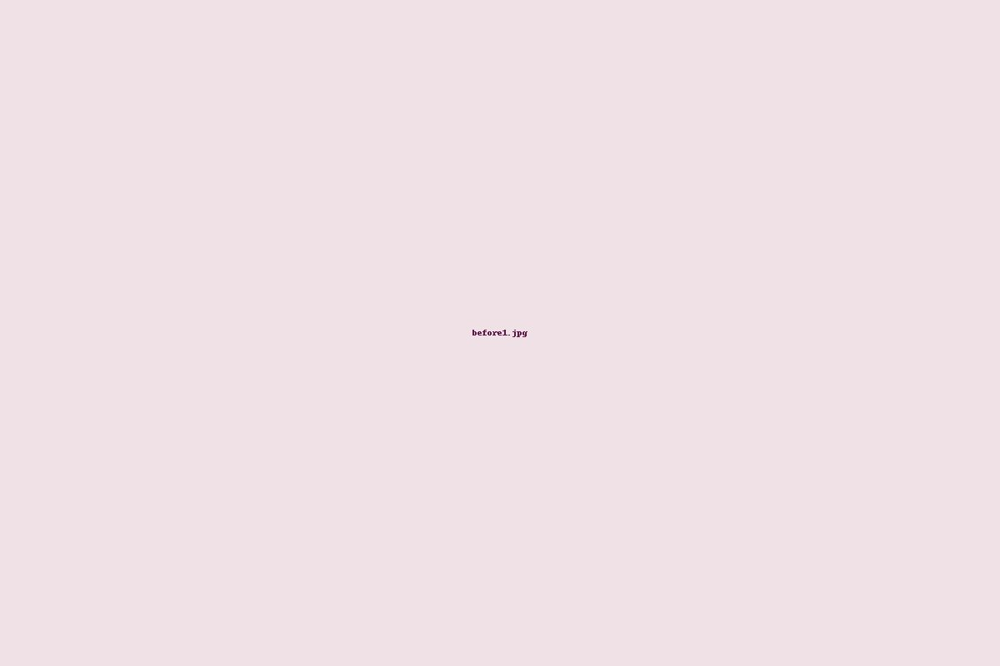
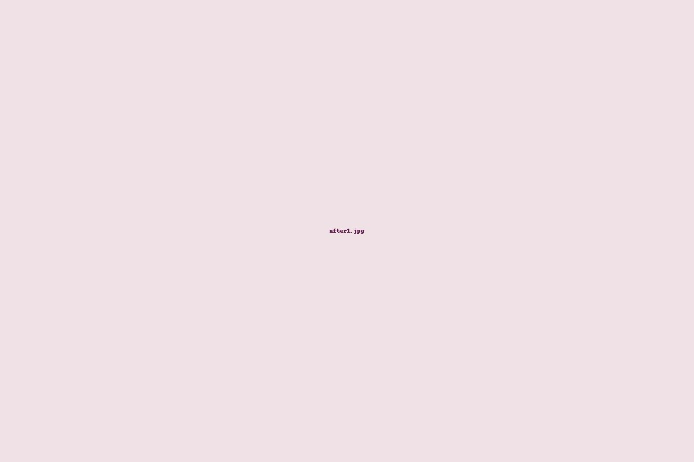

Carta de serviços
Todos os serviços de cabelo necessitam de avaliação prévia pelos profissionais.
CABELOS - Cortes
- Corte bordado
- Feminino
- Infantil
Escovas
- Escova pós-corte
- Escova
- Chapinha
- Escova Ondulada
Transformações
- Luzes / Mechas
- Progressiva / Selagem
- Taninoplastia
- Retoque raiz coloração
- Coloração
- Tonalização
- Matização
- Penteados
Tratamento Capilar
- Spa capilar ozônio
- Hidratação
- Nutrição
- Reconstrução
- Cauterização
MÃOS E PÉS / UNHAS
- Pé
- Mão
- Mão e pé
- Unhas decoradas (película, francesinha)
- Alongamento (unhas postiças, fibra de vidro)
- Banho de gel / Esmaltação em gel
- Spa mãos e pés: Hidratação de parafina
FACIAL / MAKE / MICROPIGMENTAÇÃO
- Make (com ou sem cílios)
- Micropigmentação: sobrancelha, lábios, delineado
- Alongamento e manutenção de cílios
- Limpeza de pele e máscaras (LED, Argila)
- Peeling Ultrasônico, Peeling de Diamante
CORPORAL / MASSAGENS / DEPILAÇÃO
- Massagem individual: Modeladora, Relaxante, Terapêutica
- Drenagem linfática, pós-operatório
- Bambu Terapia, Pedras quentes
- Depilação facial e corporal
- Pacotes de sessões (massagem modeladora, drenagem, etc.)
Antes & Depois
Arraste o controle para comparar o antes e depois.

